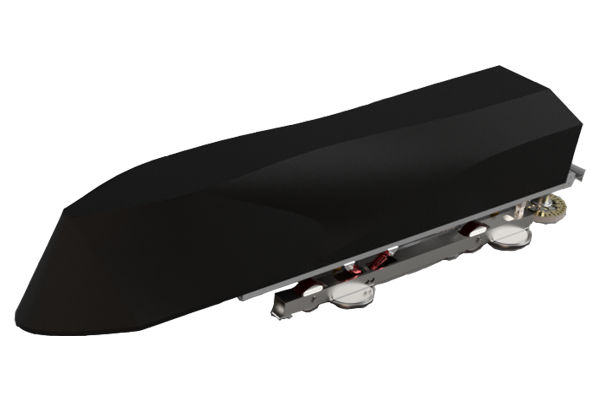

Final Report
Team Waterloop

University of Waterloo
October 2017
This page is left blank intentionally
Team Waterloop would like to recognize and thank all of our sponsors
put sponsors images below
Hyperloop is a new proposed form of high speed transportation that revolutionizes long distance travel. Traveling at Mach 1 on sheet of air in a low pressure tube, Hyperloop would make it possible to move between Toronto and Montreal in just 30 minutes.
In 2013, Elon Musk released a white paper discussing the technical and economic feasibilities surrounding the idea, and open-sourced the design. Musk described it as “cross between a rail gun, the Concord, and an air hockey table” . The white paper can be accessed here. Since then, the Hyperloop Pod Competition, hosted by SpaceX, was announced to incentivize engineering teams around the world to research, design, develop, and deliver a functional half-scale prototype of a Hyperloop pod.
Waterloop is an University of Waterloo student design team. As a team in the SSDC, our primary purpose is to compete in the yearly SpaceX Hyperloop Pod Competitions. In aligning with the mission, competition pods should be designed with real-life applicability in mind. The goal of participating in the challenges set out by SpaceX is to push the development and research in the area of Hyperloop transportation. The long-term goal is to apply the knowledge gained from building a sub-scale Hyperloop competition pods to designing a real Hyperloop systems in the future.
Waterloop is a team of ambitious students from the University of Waterloo who have been researching and developing a prototype Hyperloop pod since September 2015 to compete in the SpaceX Hyperloop Pod Competitions. We are one of two Canadian teams remaining in the competition and one of only 31 teams remaining from the initial 1200+ teams.
The team is based in Waterloo, Ontario, Canada’s largest high tech innovation hub. Our location makes it possible to access a variety of unique services, such as LOT41 Technology and Arts Campus, 3D printing from Communitech start-up Inksmith, and the Waterloo Institute for Sustainable Energy.
Waterloop is different than most University of Waterloo student teams in that we are comprised of a diverse set of students from a number of faculties. We have a substantial number of engineering students driving the design of pod subsystems, but we also have a number of students specializing in architecture, physics, computer science, business, and finance. We are a passionate team united with the common goal of building a pod that wins competitions and can scale up to become a feasible method of transportation in Canada.
We are excited to work on technology that has never existed before and which has potential to greatly improve the quality of life for people around the world. We’re very proud to be actively promoting improved transit infrastructure in Canada which can bring people together and link our local economies, while simultaneously reducing traffic, energy use, and emissions. Our goal is to create a solution that will eliminate the reliance on fossil fuel based modes of transportation for both industry and transit in a convenient and economical way. Most importantly, we wish to demonstrate feasibility of Hyperloop technology for adoption in Canada and be at the frontier of bringing Hyperloop to reality.
list of all team members in here
Summer 2015:
Assemble the Team.
Officially registered as a University of Waterloo Student Engineering Team.
Fall 2015:
Preliminary design briefing and evaluation by SpaceX. One of the 1200 teams entering the competition.
Winter 2016:
Final design briefing and evaluation by SpaceX.
Hyperloop Design Weekend at Texas A&M. One of the 31 teams around the world to advance.
May 2016:
Subsystem R&D and feasibility analysis.
Granted a private workshop at the Sedra Smith Design Centre at the University of Waterloo.
June 2016:
Designing and building rigs for subsystem testing - air levitation, eddy current braking, operating electronics in a vacuum.
August 2016:
Parts sourcing.
Frame fabrication.
Construction of a low speed test track.
Finalizing Goose I subsystem design.
October 2016:
Achieved air levitation.
Development of embedded and communication systems.
Vacuum chamber testing.
Launching a Kickstarter campaign to supplement sponsorship.
November 2016:
Successfully raised CA$43,416 with 507 backers on Goose I Kickstarter campaign.
December 2016:
High speed performance testing
System optimization.
Reliability and safety testing.
January 2017:
Attending SpaceX competition with Goose I pod. (Which one?)
February 2017:
Analyzing feedback from the SpaceX competition.
March 2017:
Beginning the build of Goose II pod. Working on overall system improvements and overhaul of multiple subsystems based on feedback from competition.
May 2017:
Developing a brand new embedded and communication systems.
Completing the assembly of Magnetic Wheels for Goose II.
Starting Goose II shell design process.
Starting the final assembly of the pod.
June 2017:
Vibrational testing of the Goose II to find and eliminate any resonance frequencies.
Testing new embedded systems elements in vacuum.
Integrating required sensors into embedded systems.
Testing communication systems and data visualization on front-end.
Completing static and dynamic levitation tests.
July 2017:
Goose II unveil.
Beginning preparations for SpaceX Competition 2.
Implementing redundancy checks and safety enhancing features in software.
Second vibrational testing to tune shock absorption for competition.
August 2017:
Tuning speed controllers for Magnetic Wheels.
Finalizing internal wiring of the pod.
Completing required administrative arrangements for the competition and transportation of the pod to SpaceX headquarters in California.
Major Mcdonald’s run.
Shipping the pod to California.
Attending SpaceX Competition 2.
As part of the SpaceX competition, team Waterloop had developed a complete solution for the pod as well as the entire infrastructure build around the vehicle, excluding the competition test track, which is in the SpaceX HQ in California. The entire pod is based on six major subsystems: Electrical, Software, Levitation, Shell, Propulsion, and Brakes. Goal of Team Waterloop from the day of the team initiation is to design a complete and cost-efficient Hyperloop pod. To develop the appropriate solution, X major design challenges had to be solved in the pod design process:
frictionless propulsion,
lateral stability,
levitation,
control system,
add more here…
After thorough design process and the lessons learned from Goose 1 pod, team Waterloop has developed and tested a complete competition ready vehicle to be raced in the SpaceX’s Hyperloop 1-mile long test track.
The pod utilizes air bearings for the levitation system, the design allows only for a minimal levitation from the ground, however eliminates most of the friction. Four air bearings are evenly spaced around the pod skis to ensure even air release and consistent levitation margin.
INSERT A CAD IN HERE
To support the air bearings levitation system i.e. to provide a consistent release of air the pod stores all of the compressed air reserves in two tanks located in the middle of the pod body. In addition, to storing air in air tanks, team Waterloop designed complete pneumatic circuitry that supplies the air reserves to the air skis and other pneumatic components.
To ensure lateral stability and a provide pod with propulsion team Waterloop has developed magnetic wheels that are based on the principles of a Halbach array .
The entire software sub-system is based on three components: embedded systems, communication systems, and front-end. Embedded-systems is responsible for all of the pod’s internal communications with the sensors, low-level control of the sub-systems, and various basic safety checks. Communication-systems is responsible for the transport of information from the vehicle to the front-end to allow for live data visualization and remote control of the pod. Front-end is responsible for displaying all of the pod’s vital readings and providing an interface to control the pod while in the tube. All of the code written for the software system of the pod is available for public access at Waterloop’s Github Page
Goose II uses an Arduino Mega 2560 as the main processing unit. The decision criteria for the hardware was as follows:
Familiar development language and environment
Accessible I/O pin-out
Support for off-the-shelf sensors and electrical components
Support for custom watchdog and access to non-volatile memory
Performance considerations
Ability to function in a vacuum environment
Two boards were mainly considered as the main computing engine for the embedded systems: Arduino Mega and STM32F746ZG.
| Arduino Mega 2560 | STM32F746ZG | |
|---|---|---|
| Processor | ATmega2560 | ARM® 32-bit Cortex®-M7 CPU |
| Clock Speed | 16 MHz | up to 216 MHz |
| Operating Voltage | 5 V | 3.3 V |
| Max Operating Temperature | +85 C | +85 C |
| GPIO | 54 1 | Up to 144 |
| Flash Memory | 256 KB 2 | 1 MB |
While the STM32F746ZG is a more powerful option, Arduino Mega 2560 offers easier and more familiar development environment with support for C++ and also provides an unparalleled integration with the off-the-shelf components.
When designing embedded system infrastructure, the team was challenged to create reusable code modules that will allow for easier transfer of knowledge. The following challenge is crucial to long-term support of the developed embedded-systems infrastructure, as Waterloop is a student design team with fairly high turnover rate of members due to factors such as mandatory co-op terms and graduation of senior students. As a result, all of the code for Arduino is written in C++14 with an extension to compile modular files into a single Arduino executable object using Platformio. By creating a modular development environment, the team is capable of reusing developed software such as custom created libraries for specific sensors installed on the pod.
Goose II has a list of safety measures that are implemented at all levels starting from electrical circuits to the front-end controls. Embedded-systems are responsible for two major safety features:
Watchdog - In order to avoid process blocking behaviour and work around the low performance of Arduino Mega 2560 that would result in delay of command execution or complete loss of control of the pod, team Waterloop has developed a custom watchdog for the embedded-systems. In case, when the CPU’s processing power is exhausted and it does not respond in appropriate time frame, a watchdog gets triggered that resets the Arduino.
Self recovery - In order to come back to a functioning state after a reset be it due to a triggered watchdog or due to a temporary loss of power, Arduino’s non-volatile memory is used to store the state of the pod at all times, which allows the pod to come back to a fully functioning state even after a complete reset of the Arduino board.
Command Received Check - To ensure that the commands sent from the front end have successfully been shipped to the Embedded systems and executed, Arduino generates a response message upon every command’s arrival and upon its execution.
Heartbeat Check - In order to check the state of interaction between front-end and Arduino, a heartbeat can be issued upon request from the front-end controls.
Three major design decisions had to be made in order to develop a powerful and flexible communication pipeline to transfer packets from the low-level Arduino environment to a high-level front-end. (1) Enabling wireless connectivity for Arduino. (2) Creating an advanced data transfer channel with limited Arduino capabilities. (3) Creating an abstract package that structure that allows for transfer of various data types without an overhead cost. The following are the criteria that have to be satisfied in a perfect communication pipeline design.
Familiar development language and environment
Wireless data transfer from the low-level Arduino environment to a high-level front-end
Channel that allows for a fast and high volume transfer of data
Standardized message packets
A design decision has been made to use websocket based communication for bilateral communication pipeline with low delay and high channel capacity. In addition, TCP based control system allows to monitor packages arrival.
Due to the lack of extra processing power in Arduino to handle high-level data transfer methods such as websockets, an external device has been added to the communication-system to take the load of data transfer form Arduino. See below for the entire diagram of the communication-system.
The addition of an independent processing device for data transfer allowed for modularity of the embedded and communication systems. An abstract JSON structure with custom fields for two types of communication packages, a command and a message, have been developed to further support the concept of modularity and allow for zero additional package processing by the communication pipeline software.
An example of an abstract JSON command:
{
"cmd": "emg",
"val": [0]
}The parameter "cmd" describes the type of control command to be executed. The parameter "val" specifies the the state to be set as active. Please see 1 for all communication pipeline commands.
An example of an abstract JSON message:
{
"time":1009,
"sensor":"gyro",
"data":[-1.54875,12.19750,11.36625, 1]
}The parameter "time" describes the timestamp of the message sent from Arduino. The parameter "sensor" specifies the sensor which emitted the message. The parameter "data" specifies the data to be sent. Please see 2 for all communication pipeline messages.
Blackbox - Due to a larger capacity of non-volatile memory on Raspberry PI, the feature of a blackbox has been implemented, where every command and sensor reading sent from Arduino to Raspberry PI is logged in a file.
Data Logging - In addition to Blackbox functionality, a separate file is generated by the pod with all of the sensor readings. Such file proved to be very useful during testing to analyze patterns in vibrations and resonance frequencies, as well as post data processing such as velocity to wheel rpm ratios.
| Command Name | Command Code | Values Allowed | Example command |
|---|---|---|---|
| EC Brake | "brk" | 0 / 1 | {"cmd":"brk","val":[0]} |
| Emergency | "emg" | 0 / 1 | {"cmd":"emg","val":[0]} |
| Speed | "spd" | 0 - 100 | {"cmd":"spd","val":[50]} |
| Mode | "mode" | 0 / 1 / 2 | {"cmd":"mode","val":[0]} |
| Ball Valve | "bv" | 0 / 1 | {"cmd":"bv","val":[0]} |
| Heartbeat | "check" | 0 / 1 | {"cmd":"check","val":[1]} |
| Save State | "rest" | 0 / 1 | {"cmd":"rest","val":[0]} |
| Stop Pod | "stop" | 0 | {"cmd":"stop","val":[0]} |
| Start Pod | "start" | 0 | {"cmd":"start","val":[0]} |
| Message Type | Example Message | |
|---|---|---|
| Sensor | {"time":1009,"sensor":"gyro","data":[-1.54875,12.19750,11.36625,1]} | |
| Command Received | {"time":2309,"received":""cmd":"emg","val":[0]"} | |
| Message | {"time":4037,"message":"Setup has been called"} |